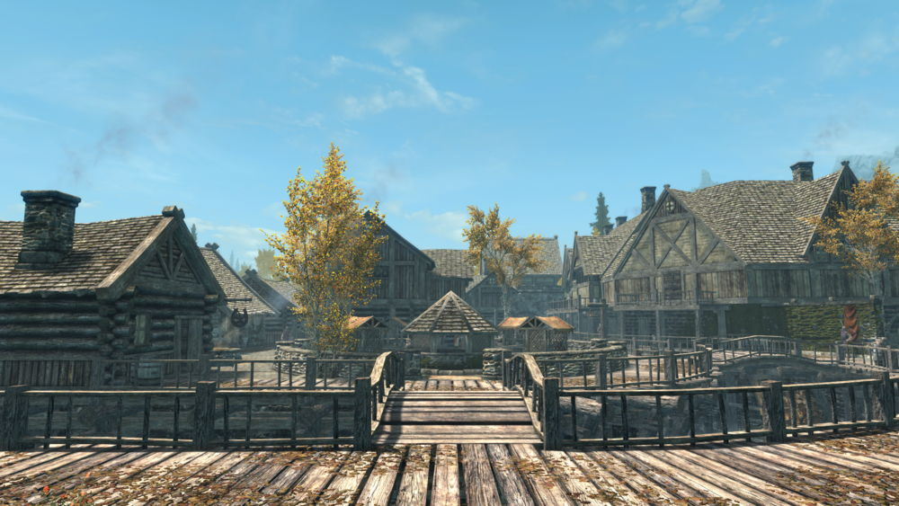
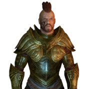
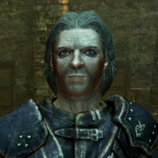
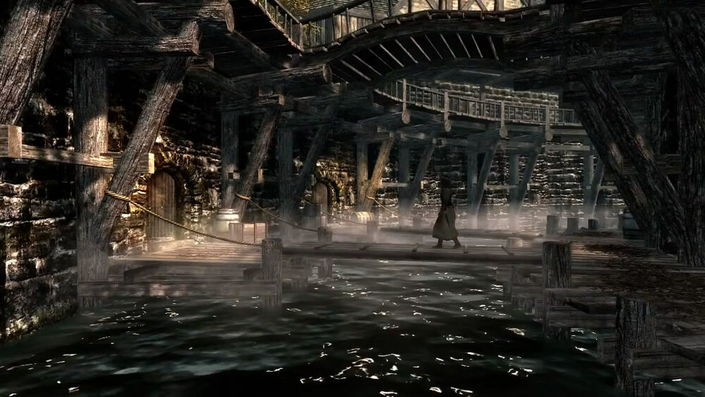
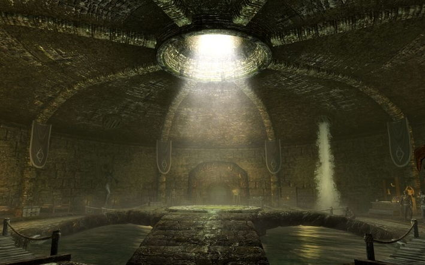
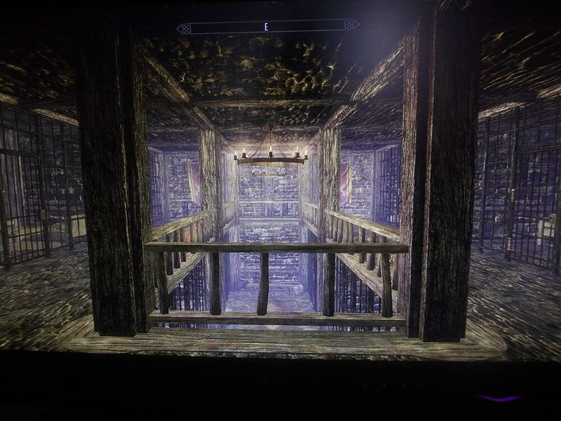

"Расположенный у восточных берегов озера Хонрик Рифтен напоминает нам об ушедшей эпохе. Величественные в своё время улицы и здания канули в небытие, и на смену им пришло скопление деревянных построек и грубых каменных сооружений, неизменно окутанных похожей на туман дымкой"— О Скрещённых кинжалах

Рифтен расположен в живописном краю Скайрима — в Осеннем лесу. Название в полной мере соответствует истине. Красота вторглась в город чудесной осенней листвой и приятной погодой. Однако большинство строений города деревянные, старые на вид, вызывающие чувство жалости, которая часто охватывает гостей Рифтена. Нельзя сказать, что это сильно беспокоит жителей Рифтена, которые в действительности видят шумный, энергичный город с сильной экономикой, подпитываемой трудолюбивыми рыбаками и медоварами.Территория города со стороны берега ограничена крепостными стенами. Рифтен является единственным городом в Скайриме, имеющим районы, расположенные за пределами его стен. Город делится на 2 района петлёй большого канала, в последнее время пришедшего в упадок из-за отсутствия торговли во время гражданской войны и являющегося транспортной артерией для небольших грузовых судов. Высокие стены канала сложены из камня. На верхнем уровне канала расположены мосты, перекинутые с одного берега на другой, и деревянная набережная в виде нависающего над пристанями балкона с ограждениями. Благодаря высоте стен малые суда без проблем проходят под мостами к деревянным пристаням на нижнем уровне, расположенным на сваях почти на уровне воды. Крепкие двустворчатые ворота запирают оба выхода канала из Рифтена в озеро. Большинство богатых домов расположены на восточной стороне канала, в то время как большинство магазинов Рифтена и рынок находится на западной стороне. В южной части города доминируют крепость Миствейл и тюрьма. Восточная, большая часть города (дальняя от озера Хонрик), расположенная между каналом и крепостной стеной, называется Сухой стороной. Западная часть города, известная как Дощатая сторона, частью располагается на древнем фундаменте старого разрушенного города (с канализационным коллектором), а частью — фактически над водой озера, на больших деревянных причалах. Район очень старый и ветхий. На причалах построено три здания: медоварня «Чёрный Вереск» (городской центр медоварения), полностью принадлежащая клану Чёрный Вереск, рыбный порт и склад. Последние используются для общей торговли и в качестве пристани рыбацких лодок. В обширной канализационной сети разрушенного старого города, в так называемой Крысиной Норе, под современным городом Рифтен, находится штаб-квартира Гильдии воров.
Крысиная нора — база Гильдии воров
Ещё одним интересным местом для посещения является Крысиная нора, которая находится под Рифтеном — в канализационном коллекторе, оставшимся от старого разрушенного города. Включает в себя пять зон — подземелья Крысиной норы, таверну «Буйная фляга», связанную с ней Цистерну и катакомбы Хранилища и Муравейника.
Здесь обосновалась Гильдия воров. Рифтен пользуется сомнительной славой из-за преступлений, совершаемых этой Гильдией. Тем не менее, в нынешние времена Гильдия воров переживает не самые лёгкие дни, о чём главному герою красноречиво смогут рассказать жители города.Для сбыта ворованных вещей можно вступить в Гильдию воров и, пройдя все квесты данной фракции, включая квест «Смена руководства», получить четырёх скупщиков краденого с изначальной суммой в 4000 септимов, которых можно встретить в разных городах Скайрима.
Храм Мары
Также стоит уделить внимание храму Мары, богини любви. В этом достаточно известном храме проводятся обряды бракосочетания. Напротив входа стоит статуя Мары. Главный герой может приобрести амулет Мары, который позволяет избрать себе спутника жизни. Также в этом храме он может излечиться от болезней, принести пожертвования и взять квест «Книга любви».
Администрация | |
Крепость Миствейл | |
| Лайла Рука Закона, ярл Рифтена | Унмид Снегоход, хускарл ярла Лайлы Руки Закона |
|  | |
| Вайландрия, придворный маг | |
Гильдии | |
| Гильдия воров | |
| Мерсер Фрей, глава Гильдии воров | |
|  | |
|  |  |  |
| Рифтенские водные сооружения | Гильдия воров | Тюрьма Рифтена |